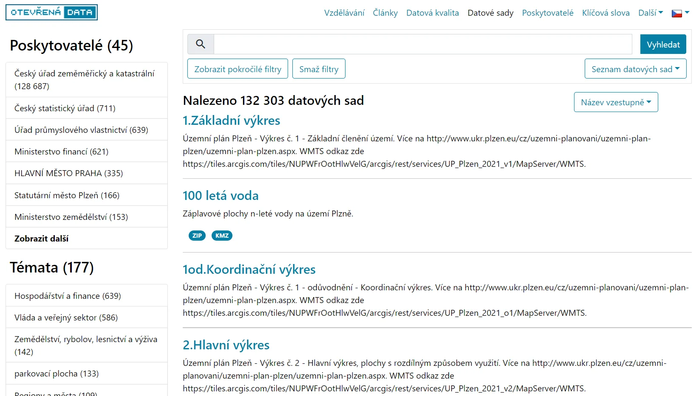

K tomu, aby byla zajištěna kvalita celé infrastruktury otevřených dat, je zapotřebí:
Tyto požadavky jsou naplňovány katalogizací otevřených dat.
Nejsou-li data opatřena příslušnými metadaty a řádně zkatalogizována, pak:
Národní katalog otevřených dat sdružuje metadata o otevřených datových sadách v rámci celé ČR.
NKOD umožňuje vyhledávat a filtrovat datové sady, např. podle poskytovatelů, klíčových slov atp.
V NKOD lze datové sady filtrovat a vyhledávat mj. podle poskytovatelů, klíčových slov, formátů aj.
Zkuste si nyní vyhledat v NKOD seznam datových sad, jejichž poskytovatelem je Statutární město Brno a jsou ve formátu CSV.
Řešení si prozradíme na dalším slidu…
Výpis příslušných datových sad se nachází např. na této stránce
Dospěli jste také k tomuto výpisu?
Postup je jednoduchý: nejprve provedeme filtrování
ve
výpisu „Poskytovatelé“ (Statutární město Brno),
následně zvolíme filtr ve výpisu „Formáty“ (CSV).
V katalogových záznamech k datovým sadám registrovaným v NKOD jsou k dispozici informace mj. o:
Jako metadata označujeme „data o datech“.
Položky uvedené na předchozím slidu byly tedy ukázkami metadat k otevřeným datovým sadám.
Ve vztahu k NKOD dělíme metadata na povinná (musí být u každé datové sady) a nepovinná.
Obecně platí: čím více metadat k dané sadě poskytneme, tím je větší pravděpodobnost, že ji potenciální uživatelé dohledají.
Proč můžeme datové sady katalogizované v NKOD považovat za důvěryhodné?
Do NKOD mohou být zaregistrovány datové sady orgánů veřejné moci (např. orgánů státní správy, měst, obcí, …) na základě příslušného formálního požadavku, případně některých dalších veřejných institucí.
Jak zaregistrovat datovou sadu do Národního katalogu otevřených dat?
Existují v zásadě dva základní způsoby:
Lokální katalog je aplikace, která slouží ke správě metadat o (otevřených datech) dané instituce.
Na úrovni instituce hraje podobnou roli jako NKOD na úrovni národní.
Lokální katalogy otevřených dat provozuje v ČR řada institucí, mj. například:
Pokračujte prosím na následující modul.
V případě hlubšího zájmu o toto téma – zejména z technického hlediska – doporučujeme e-learningový kurz Katalogizace otevřených dat.